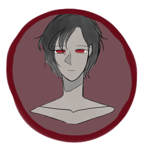
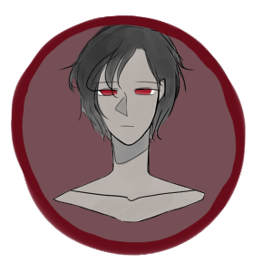

Arlo is the offense manager, and one of the guild masters of "Keepers of the Dark." Maintains the offense department of the guild in preparation for any attacks.
Appearance
Dark-skinned man that is above average height. Often dressed in dark, heavy set of armor.
Personality
Stiff and serious.
Abilities
Strength magic
Equips the user with monstrous strength with enormous magical energy
Swordsmanship
Alias "Nightmare"
Age 20 years old
Eye color Red
Hair color Black
Height 5'8
Position Offense